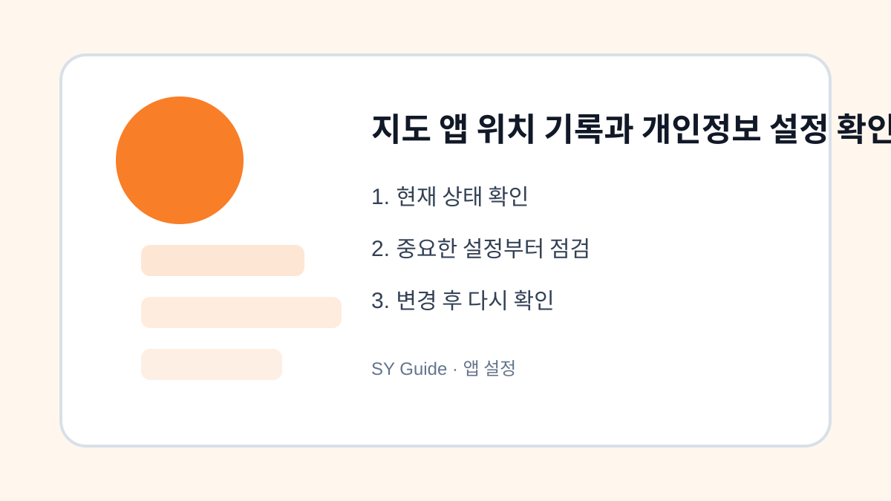

지도 앱 위치 기록과 개인정보 설정 확인하기
지도 앱의 위치 기록과 권한을 확인해 필요한 기능은 유지하고 개인정보 부담은 줄입니다.

지도 앱은 길찾기와 주변 검색에 꼭 필요하지만 위치 기록이 오래 쌓이면 부담이 될 수 있습니다. 위치 권한을 모두 끄면 불편하고, 항상 허용하면 필요 이상으로 기록될 수 있습니다. 사용 목적에 맞게 조정하는 것이 좋습니다.
위치 권한 단계 확인
스마트폰 설정에서 지도 앱의 위치 권한이 항상 허용인지, 앱 사용 중 허용인지 확인합니다. 길찾기 중심으로 쓴다면 앱 사용 중 허용으로도 충분한 경우가 많습니다. 백그라운드 위치가 꼭 필요한 기능을 쓰는지 생각해보세요.
공식 개인정보 설정 보기
Google 지도 위치 기록은 Google 지도 고객센터에서 최신 안내를 확인할 수 있습니다. 앱마다 메뉴 이름이 바뀔 수 있으므로 공식 도움말을 참고하면 안전합니다.
| 설정 | 장점 | 주의점 |
|---|---|---|
| 항상 허용 | 기록 자동화 | 개인정보 부담 |
| 앱 사용 중 | 균형적 | 일부 기능 제한 |
| 허용 안 함 | 노출 최소화 | 길찾기 불편 |
앱 설정을 바꾸기 전 마지막 점검
- 지도 앱 위치 권한 단계 확인하기
- 위치 기록 저장 여부 확인하기
- 필요 없는 방문 기록 삭제하기
- 가족과 공유 중인 위치 설정 점검하기
- 앱 업데이트 후 권한이 바뀌었는지 보기
위치 정보는 편리함과 개인정보가 함께 걸린 항목입니다. 완전히 끄기보다 필요한 범위를 정해 관리하면 일상 기능을 유지하면서 부담을 줄일 수 있습니다.
지도 앱 위치 기록에서 먼저 열어볼 메뉴
지도 앱 위치 기록은 앱 내부 설정과 스마트폰 설정이 따로 움직일 수 있습니다. 앱 안에서 알림, 기록, 공개 범위를 확인한 뒤 스마트폰 설정에서 권한과 알림 허용 범위를 다시 보는 순서가 좋습니다.
지도 앱 위치 기록 변경 후 확인할 점
설정을 바꾼 뒤에는 실제 알림이 오는지, 위치 기능이 필요한 순간에 작동하는지, 사진이나 마이크 접근이 막히지 않았는지 확인하세요. 필요한 기능까지 끄면 사용성이 떨어질 수 있습니다.
지도 앱 위치 기록 관련 공식 확인처
확인 기준: 2026.06.27 · 작성/검토: SY Guide 편집팀 · 정정 문의: issuebara@gmail.com